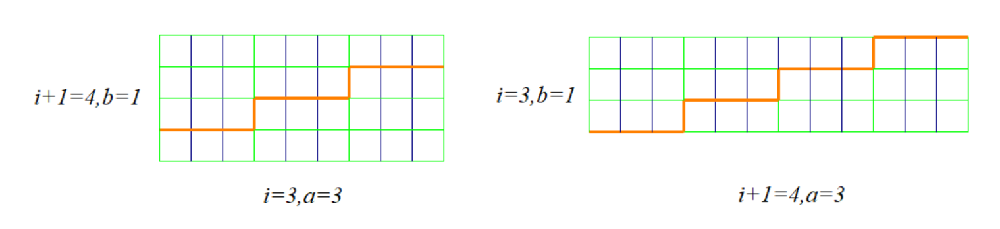

Project Euler 338
Project Euler 338
题目
Cutting Rectangular Grid Paper
A rectangular sheet of grid paper with integer dimensions \(w \times h\) is given. Its grid spacing is \(1\).
When we cut the sheet along the grid lines into two pieces and rearrange those pieces without overlap, we can make new rectangles with different dimensions.
For example, from a sheet with dimensions \(9 \times 4\), we can make rectangles with dimensions \(18 \times 2, 12 \times 3\) and \(6 \times 6\) by cutting and rearranging as below:

Similarly, from a sheet with dimensions \(9 \times 8\) , we can make rectangles with dimensions \(18 \times 4\) and \(12 \times 6\) .
For a pair \(w\) and \(h\), let \(F(w,h)\) be the number of distinct rectangles that can be made from a sheet with dimensions \(w \times h\) .
For example, \(F(2,1) = 0, F(2,2) = 1, F(9,4) = 3\) and \(F(9,8) = 2\).
Note that rectangles congruent to the initial one are not counted in \(F(w,h)\).
Note also that rectangles with dimensions \(w \times h\) and dimensions \(h \times w\) are not considered distinct.
For an integer \(N\), let \(G(N)\) be the sum of \(F(w,h)\) for all pairs \(w\) and \(h\) which satisfy \(0 < h \le w \le N\).
We can verify that \(G(10) = 55, G(10^3) = 971745\) and \(G(10^5) = 9992617687\).
Find \(G(10^{12})\). Give your answer modulo \(10^8\).
解决方案
把 \(w\times h\) 看成由单位正方形组成。一次切割后得到两块多格子图形，它们的拼接边界必须完全吻合，最终外轮廓要变成矩形。
经典的（也是唯一能系统产生矩形到矩形的）情形是“阶梯形”边界：边界由若干次 “向右 1 格 + 向上 1 格” 的重复构成。此时整张纸可以按块分解为一个 \(i\times(i+1)\) 的小块阵列：存在整数\(i\ge 1, a\ge 1,b\ge 1,\)使得原矩形尺寸可写为\((w,h)=(ai,b(i+1)),\) 切成两块后交换阶梯的“长边/短边”角色，即可拼成\((w',h')=(a(i+1),bi).\)可以把\(i\)理解成：阶梯线一侧有 \(i\) 个台阶，另一侧对应 \(i+1\) 个台阶（或者说块阵列的行数/列数分别是 \(i\) 与 \(i+1\)）。

因此，所有能由一次切割变形得到的矩形对，必然来自某个三元组 \((a,b,i)\) 的这类相邻因子互换。
另外，若 \(a=b\)，则 \((ai,a(i+1))\) 变到 \((a(i+1),ai)\)，只是交换两条边，属于与原矩形全等，按题意不计入。
把“每个可变形的原矩形贡献 1 次”的计数，改为直接计数所有满足约束的 \((a,b,i)\) 变换，并处理“同一变换被不同 \((a,b,i)\) 表示”的去重。
固定 \(i\)：
- \(ai\le N \Rightarrow 1\le a\le \left\lfloor\dfrac{N}{i}\right\rfloor\)
- \(b(i+1)\le N \Rightarrow 1\le b\le \left\lfloor\dfrac{N}{i+1}\right\rfloor\)
候选数为 \(\left\lfloor\dfrac Ni\right\rfloor\left\lfloor\dfrac N{i+1}\right\rfloor\)。其中 \(a=b\) 的非法（全等）情况数量为 \(\left\lfloor\dfrac N{i+1}\right\rfloor\)。因此未去重总数为
\[ S=\sum_{i=1}^{N-1}\left( \left\lfloor\frac Ni\right\rfloor\left\lfloor\frac N{i+1}\right\rfloor -\left\lfloor\frac N{i+1}\right\rfloor \right). \]
令\(\displaystyle{s_1=\sum_{i=1}^{N-1}\left\lfloor\frac{N}{i}\right\rfloor\left\lfloor\frac N{i+1}\right\rfloor,s_2=\sum_{i=2}^{N}\left\lfloor\frac Ni\right\rfloor,}\)则\(S=s_1-s_2.\)
那么为计算 \(G(N)\)，前面把所有合法的构造按三元组 \((a,b,i)\) 计数：每个 \((a,b,i)\) 对应一次变换\((ai,b(i+1))\longrightarrow (a(i+1),bi),\)并要求 \(ai\le N,b(i+1)\le N\)，同时剔除 \(a=b\)（否则仅是交换两边、与原矩形全等）。这样得到的总数 \(S\) 仍然会多算，原因是：同一对矩形（起始矩形与其变换后的矩形，均视为无序对）可能由两组不同参数 \((a,b,i)\) 与 \((a',b',j)\) 产生。
设存在两组不同参数 \((a,b,i)\) 与 \((a',b',j)\)（其中 \(i\ne j\)），产生同一个变换。由于矩形不区分长宽顺序，这等价于下面两个无序集合同时相等：\(\{ai,b(i+1)\}=\{a'j,b'(j+1)\},\{a(i+1),bi\}=\{a'(j+1),b'j\}.\)
如果两边都“同向匹配”（即 \(ai=a'j\) 且 \(b(i+1)=b'(j+1)\)，并且 \(a(i+1)=a'(j+1)\) 且 \(bi=b'j\)），则由\(\dfrac{a(i+1)}{ai}=\dfrac{a'(j+1)}{a'j}\)立刻得到 \(\dfrac{i+1}{i}=\dfrac{j+1}{j}\)，从而 \(i=j\)，与 \(i\ne j\) 矛盾。因此，产生重复的情形必然来自“交叉匹配”，也就是起始矩形按一种方式对齐，而目标矩形按另一种方式对齐。
不妨固定一种交叉方式（另一种方式完全对称，稍后合并即可）：\(ai=a'j, b(i+1)=b'(j+1),\)而目标矩形满足\(a(i+1)=b'j, bi=a'(j+1).\)由前两式与第三式相除得\(\dfrac{a(i+1)}{ai}=\dfrac{b'j}{a'j}\Longrightarrow\dfrac{i+1}{i}=\dfrac{b'}{a'}.\)
由于 \(\gcd(i,i+1)=1\)，分数 \(\dfrac{i+1}{i}\) 已是既约分数，因此必存在整数 \(t\ge1\) 使得\(a'=ti, b'=t(i+1).\)将 \(a'=ti\) 代入 \(ai=a'j\) 得\(ai=ti\cdot j\Longrightarrow a=tj.\)再把 \(a'=ti\) 代入 \(bi=a'(j+1)\) 得\(bi=ti\cdot (j+1)\Longrightarrow b=t(j+1).\)
因此，一旦同一变换出现两套不同参数表示，它们必然具有如下刚性结构：\((a,b)=(tj,t(j+1)), (a',b')=(ti,t(i+1)),\)其中 \(t\ge 1\) 且 \(i\ne j\)。
接下来把“是否在范围内”转化为对 \(t\) 的约束。以第一套参数表示的起始矩形为例，其两边为 \(ai=(tj),i=tij, b(i+1)=t(j+1)(i+1).\)由于 \((j+1)(i+1)>ij\)，约束 \(ai\le N\) 与 \(b(i+1)\le N\) 等价于只需满足\(t(i+1)(j+1)\le N.\)令 \(A=i+1\ge2, B=j+1\ge2,\)则“产生一次重复”的充要条件变成存在整数 \(t\ge1\) 使得\(tAB\le N.\)对固定的有序对 \((A,B)\)，满足 \(tAB\le N\) 的 \(t\) 的个数显然是\(\left\lfloor\dfrac N{AB}\right\rfloor.\)
上面的推导对应一种交叉匹配方式；另一种对称的交叉匹配（把 \(j\) 与 \(j+1\) 在匹配中互换）会给出同样的结论，只是把 \((A,B)\) 的来源在有序意义下互换。将两种交叉方式合并后，恰好得到：每一对有序整数 \((A,B)\)（且 \(A\ge2,B\ge2\)）都会贡献 \(\left\lfloor\dfrac N{AB}\right\rfloor\) 个重复来源。因此需要扣除的重复总数为 \[ U(N)=\sum_{A=2}^{\infty}\sum_{B=2}^{\infty}\left\lfloor\frac N{AB}\right\rfloor. \]
并且当 \(AB>N\) 时取整项为 \(0\)，所以实际只需考虑 \(AB\le N\) 的项。
最终有 \[ G(N)=s_1-s_2-U(N). \]
接下来关键是把 \(U(N)\) 降到可在 \(N=10^{12}\) 上快速计算。
注意到\(\left\lfloor\dfrac N{ab}\right\rfloor=\#\{c\ge 1:abc\le N\}.\) 因此\(U(N)=\#\{(a,b,c): a\ge2,b\ge2,c\ge1,abc\le N\}.\)
引入两个标准计数：
- 二维有序计数\(\displaystyle{T_2(N)=\#\{(x,y)\ge 1:xy\le N\}=\sum_{k=1}^{N}\left\lfloor\frac{N}{k}\right\rfloor.}\)
- 三维有序计数\(\displaystyle{T_3(N)=\#\{(x,y,z)\ge 1:xyz\le N\}=\sum_{n\le N}d_3(n).}\)
用容斥从 \(T_3\) 扣掉 \(a=1\) 或 \(b=1\)：
- \(a=1\) 的三元组数为 \(\#\{(b,c): bc\le N\}=T_2(N)\)
- \(b=1\) 同理也是 \(T_2(N)\)
- \(a=b=1\) 被扣两次需加回：\(\#\{c\le N\}=N\)
所以 \[ U(N)=T_3(N)-2T_2(N)+N. \]
再注意 \(s_2=T_2(N)-N\)，代回 \(G(N)=s_1-s_2-U(N)\) 得到漂亮的消元：
\[ G(N)=s_1+T_2(N)-T_3(N). \]
求解\(s_1,T_2\)可以在\(O(\sqrt{N})\)时间内使用数论分块求解。
首先计算\(T_2\)。当 \(v=\lfloor N/k\rfloor\) 固定时，\(k\) 落在区间\(k\in\left[\left\lfloor\dfrac N{v}\right\rfloor,\left\lfloor\dfrac N{\left\lfloor\frac{N}{v}\right\rfloor}\right\rfloor\right]\) 可用标准写法：令 \(k\) 从 1 开始，设 \(v=\lfloor N/k\rfloor\)，则使商为 \(v\) 的最大 \(k\) 为 \(r=\lfloor N/v\rfloor\)，区间 \([k,r]\) 上都等于 \(v\)。
接下来计算\(s_1\)。同样分两部分：
- 小 \(i\)（直到某个阈值）直接算；
- 大 \(i\) 时 \(\lfloor N/i\rfloor\) 很小，可按商 \(q=\lfloor N/i\rfloor\) 分组。对固定 \(q\)，满足 \(\lfloor N/i\rfloor=q\) 的 \(i\) 形成一段\(i\in\left(\left\lfloor\dfrac N{q+1}\right\rfloor,\left\lfloor\dfrac Nq\right\rfloor\right].\)在这段里 \(\lfloor N/(i+1)\rfloor\) 几乎总是 \(q\)，只有最后一个 \(i\) 会使 \(\lfloor N/(i+1)\rfloor=q-1\)。于是该段贡献为\((c-1)\cdot q^2 + q(q-1),\)其中\(c=\left\lfloor\dfrac Nq\right\rfloor-\left\lfloor\dfrac N{q+1}\right\rfloor.\)
接下来计算\(T_3\)：直接三重循环不行。核心是先数“非降序三元组”：\(H(N)=\#\{(a,b,c): 1\le a\le b\le c,abc\le N\}.\)
显然 \(a^3\le abc\le N\)，所以\(a\le \lfloor\sqrt[3]{N}\rfloor.\)固定 \(a\)，令 \(M=\left\lfloor\dfrac Na\right\rfloor,\)需要数\(\#\{(b,c): a\le b\le c,bc\le M\}.\)当 \(b\le \lfloor\sqrt M\rfloor\) 时，合法 \(c\) 的个数为\(\left\lfloor\dfrac Mb\right\rfloor-b+1.\)因此，令
\[ H(N)=\sum_{a=1}^{\lfloor\sqrt[3]{N}\rfloor}\sum_{b=a}^{\lfloor\sqrt{N/a}\rfloor}\left(\left\lfloor\frac{N/a}{b}\right\rfloor-b+1\right). \]
把非降序三元组按相等类型分解：
- \(A\)：严格递增 \(a<b<c\)
- \(B\)：\(a=b<c\)
- \(D\)：\(a<b=c\)
- \(E\)：\(a=b=c\)
则\(H=A+B+D+E.\)有序三元组数为\(T_3=6A+3B+3D+E.\)消去\(A=H-B-D-E,\)得到\(T_3=6(H-B-D-E)+3B+3D+E=6H-3B-3D-5E.\)
接下来分别计算 \(B,D,E\)：
- \(E=\lfloor\sqrt[3]{N}\rfloor\)。
- \(\displaystyle{B=\#\{(a,c): a\ge 1,c>a,a^2c\le N\}=\sum_{a=1}^{\lfloor\sqrt N\rfloor}\max\left(0,\left\lfloor\frac N{a^2}\right\rfloor-a\right).}\)
- \(\displaystyle{D=\#\{(a,b): b\ge 1,a<b,ab^2\le N\}=\sum_{b=1}^{\lfloor\sqrt N\rfloor}\min\left(b-1,\left\lfloor\frac N{b^2}\right\rfloor\right).}\)
由此完成对\(T_3\)进行计算。
将所有的结果恢复到
\[G(N)=s_1+T_2(N)-T_3(N)\]
上合并起来即可。
代码
1 | from tools import int_sqrt, int_cubert |